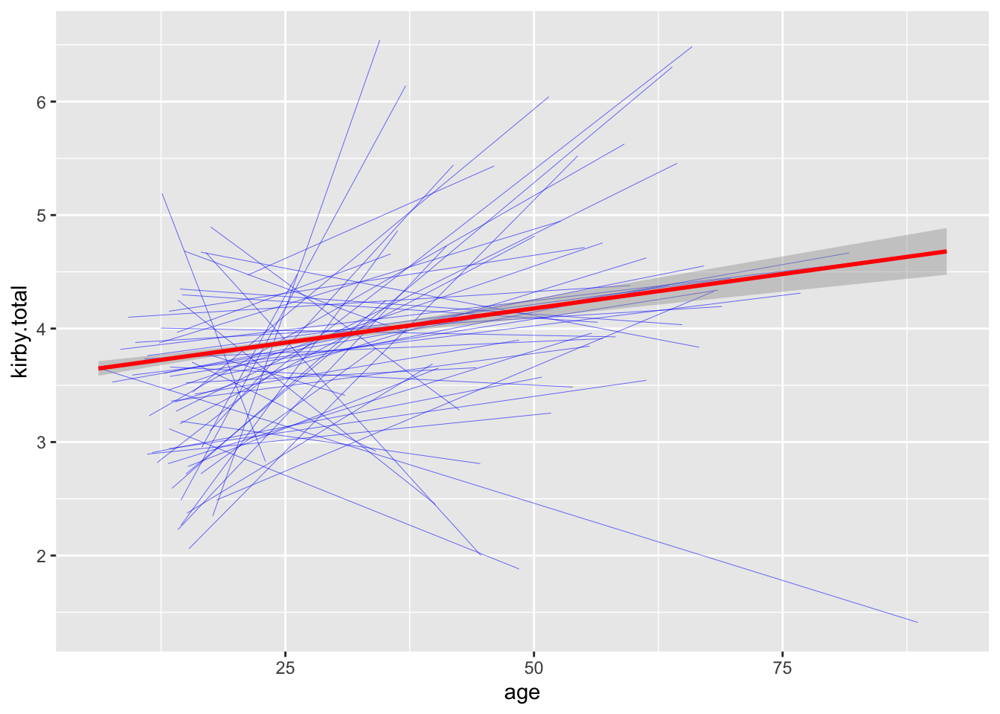

Content
These are the packages we will be using in this week’s workbook.
library(tidyverse)
library(knitr)
library(lme4)
library(lmerTest)Linear Mixed Effects Modelling
As covered in Lectures, one of the advantages of using Mixed Effects Modelling is when your data violates the assumption of non-independence. A common example is when conducting cross-national research, where responses from different people in the same country may be more similar to each other than responses from people in a different country for reasons not captured in your model. In the following analysis, we will test the influence of age on future discounting behaviour across nations.
1. Clean data for analysis.
First, we need to calculate a future discounting score for each participant, standardise age, and remove participants with missing data. We also remove participants with unrealistic ages (over 100-years-old or under 6-years-old) and participants from countries where we have less than 10 participants.
data_clean <- fd.data %>%
drop_na(age,kirby1,kirby2,kirby3,kirby4,kirby5,kirby6,kirby7,kirby8,kirby9) %>%
mutate(kirby.total = kirby1 + kirby2 + kirby3 + kirby4 + kirby5 + kirby6 + kirby7 + kirby8 + kirby9,
z.age = c(scale(age))) %>%
filter(age <= 100) %>%
filter(age >= 6) %>%
group_by(resident) %>%
filter(n() >= 10) %>%
ungroup()2. Conduct analysis.
To run a linear mixed effects model, we use the lmer() function from the lme4 package, that has been adapted by the lmerTest package.
Like all analyses conducted in previous workbooks, we need two things when conducting a mixed effect model: a formula, and a data.frame.
Here is an example of a formula for a mixed effects model:
y ~ x1 + (1 + x1 | group1)
To specify fixed effects, the formula is identical to that of a normal regression. However, to specify random effects, we need to introduce some new syntax. In the formula above, random effects are specified within the brackets, that contains a | symbol. The variable on the right of the | specifies the grouping variable. Everything on the left specifies the random effects. A 1 indicates we want a random intercept (i.e., we expect scores on y to vary depending on group1). Variables on the lefthand side indicate we want random slopes (i.e., in the example above, we expect the effect of x1 on y to vary depending on group1).
So in our future discounting analysis, we want a fixed effect of participant age, a random intercept of residence, and a random slope of age depending on residence, so our formula is:
formula <- 'kirby.total ~ z.age + (1 + z.age | resident)'We then feed that into the lmer() function:
model <- lmer(formula,data = data_clean)
summary(model)## Linear mixed model fit by REML. t-tests use Satterthwaite's method [
## lmerModLmerTest]
## Formula: formula
## Data: data_clean
##
## REML criterion at convergence: 53007.9
##
## Scaled residuals:
## Min 1Q Median 3Q Max
## -2.6693 -0.5850 0.0217 0.6116 3.4501
##
## Random effects:
## Groups Name Variance Std.Dev. Corr
## resident (Intercept) 0.09542 0.3089
## z.age 0.15325 0.3915 -1.00
## Residual 3.08354 1.7560
## Number of obs: 13355, groups: resident, 55
##
## Fixed effects:
## Estimate Std. Error df t value Pr(>|t|)
## (Intercept) 3.73685 0.05485 35.21128 68.125 < 2e-16 ***
## z.age 1.31037 0.16282 28.25146 8.048 8.6e-09 ***
## ---
## Signif. codes: 0 '***' 0.001 '**' 0.01 '*' 0.05 '.' 0.1 ' ' 1
##
## Correlation of Fixed Effects:
## (Intr)
## z.age -0.288
## convergence code: 0
## boundary (singular) fit: see ?isSingularIn the summary above, there are two tables of interest. In most cases, you will be interested in the ‘fixed effects’ table. This can be interpreted in the same way you would interpret a regression table. Note though, that estimates are unstandardised.
The other table is the ‘random effects’ table, which gives you information about variability in your model. So in the example above, scores on future discounting vary by .31 standard deviations depending on residence, the effect of age on future discounting varies by .39 standard deviations depending on residence, while 1.76 standard deviations of future discounting is residual (i.e., not explained by the model).
Sometimes, when running a mixed effect model, you will receive an error message that says the model failed to converge. This means that the analysis did not find a single solution, so we cannot be confident in the results above. If this occurs, the next step is to simplify the random effects structure. One way to do this is to force the random effects to be uncorrelated, which can be specified by using two of the | symbol inside the brackets. For more information on specifying random effects maximally, read Barr et al. (2013).
3. Plot the Data
In the plot below, each of the blue lines represents the relationship between age and future discounting for each country, while the red line is the overall relationship.
ggplot(data = data_clean,aes(x = age,y = kirby.total)) +
geom_smooth(aes(group = resident),method = "lm",formula = y ~ x, colour = "blue",se = FALSE,size = .1) +
geom_smooth(method = "lm",formula = y ~ x, colour = "red")
Another Example
In the above example, the level of analysis was at the participant-level. However, since each participant completed 9 inter-temporal choice items, arguably the more appropriate level of analysis is at the item-level.
Prepare the data
For all analyses to this point, we have required the data to have the structure that one row represents data from one participant. However, this may not be the case when conducting a linear mixed effects model. For a mixed effects model, each row must represent one observation (i.e., Level 1).
For example, let’s say we want to investigate the influences on what participants find attractive in a face, so we conduct a study where each participant rates 9 faces. If we formatted our data so that each participant was on one row, our data would look something like this:
data_short <- data.frame(participant_ID = 1:40,
face1 = sample(1:9,40,replace = TRUE),
face2 = sample(1:9,40,replace = TRUE),
face3 = sample(1:9,40,replace = TRUE),
face4 = sample(1:9,40,replace = TRUE),
face5 = sample(1:9,40,replace = TRUE),
face6 = sample(1:9,40,replace = TRUE),
face7 = sample(1:9,40,replace = TRUE),
face8 = sample(1:9,40,replace = TRUE),
face9 = sample(1:9,40,replace = TRUE))
data_long <- gather(data_short,key = "face",value = "rating",face1:face9) %>%
arrange(participant_ID,face)However, to conduct an mixed effects model, we require each row to represent one observation. In this instance, one observation is one rating made by one participant about one face. Therefore, data from one participant would be separated into 9 rows, (one for each rating they gave), and look something like this:
In the examples above, we would call the format of the first data.frame the “short-form”, while the format for the second is “long-form”. To convert a dataframe from short-form to long-form and vice versa, we use the gather() and spread() functions respectively.
gather()
The gather() function converts data.frames from short-form to long-form. In order to do this, we first need to specify two new variable names. First, the ‘key’, which could be considered as the name for your ‘Trial ID’ (in the example above, this is the different faces). Second, the ‘value’ variable, which is the name of the variable you are converting to long-form (in the example above, we have used ‘rating’). Finally, you need to specify all the variables that you are converting to long-form. So to covert the data.frame above, the code looks like this:
data_long <- gather(data_short,key = "face",value = "rating",face1,face2,face3,face4,face5,face6,face7,face8,face9) %>%
arrange(participant_ID,face)spread()
If you want to convert back the other way for some reason, you can use the spread() function. Again, you will need to specify which column is the ‘key’ and which column is the variable you wish to convert to short-form. With this information, the spread() function is smart enough to know what to do:
data_short <- spread(data_long,key = face,value = rating)Actually preparing the data
So, with all that information out of the way, let’s actually convert our future discounting data from short-form to long-form.
data_long <- gather(data_clean,key = "kirby_id",value = "response",kirby1,kirby2,kirby3,kirby4,kirby5,kirby6,kirby7,kirby8,kirby9) %>%
arrange(user_id,kirby_id)Run the analysis
As always, now that we have the data.frame prepared for analysis, the only other thing we need is the formula. For the following analysis, we require three random effect groups:
- A random effect of participant.
- A random effect of country.
- A random effect of trial.
We also want to specify random slopes maximally, therefore, we will need a random slope of age for the country group, and the trial group. We do not need one for the participant group, because age does not vary within participants.
Altogether, our formula becomes:
formula <- 'response ~ z.age +
(1 | user_id) +
(1 + z.age || resident) +
(1 + z.age || kirby_id)'Note: we use the double || symbol above because a convergence error when using a single |.
We can now run the analysis! Note: given that our dependent variable is a dichotomous variable, we need to use the glmer() function, and specify that the response is binomail using the ‘family’ argument.
model <- glmer(formula,data = data_long,family = "binomial")summary(model)## Generalized linear mixed model fit by maximum likelihood (Laplace
## Approximation) [glmerMod]
## Family: binomial ( logit )
## Formula: response ~ z.age + (1 | user_id) + (1 + z.age || resident) +
## (1 + z.age || kirby_id)
## Data: data_long
##
## AIC BIC logLik deviance df.resid
## 76864.7 76932.5 -38425.3 76850.7 120188
##
## Scaled residuals:
## Min 1Q Median 3Q Max
## -65.748 -0.250 -0.048 0.203 53.356
##
## Random effects:
## Groups Name Variance Std.Dev.
## user_id (Intercept) 5.617e+00 2.370e+00
## resident (Intercept) 2.865e-01 5.352e-01
## resident.1 z.age 3.076e-10 1.754e-05
## kirby_id (Intercept) 1.385e+01 3.721e+00
## kirby_id.1 z.age 3.336e+00 1.827e+00
## Number of obs: 120195, groups: user_id, 13355; resident, 55; kirby_id, 9
##
## Fixed effects:
## Estimate Std. Error z value Pr(>|z|)
## (Intercept) -1.0518 1.2142 -0.866 0.3864
## z.age 1.1077 0.6512 1.701 0.0889 .
## ---
## Signif. codes: 0 '***' 0.001 '**' 0.01 '*' 0.05 '.' 0.1 ' ' 1
##
## Correlation of Fixed Effects:
## (Intr)
## z.age 0.009
## convergence code: 0
## boundary (singular) fit: see ?isSingular